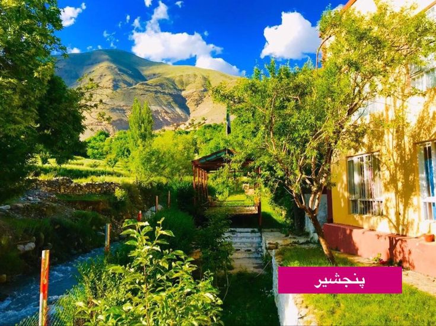

Panjshir – Valley of Strength
Panjshir, nestled in the Hindu Kush mountains, is known for its breathtaking green valleys, historical resistance, and a deeply rooted sense of identity. It's a symbol of Afghan courage and peace.
- Famous Food: Panjshiri-style grilled lamb with wild herbs.
- Traditional Clothes: Pakol and Destmal.
- Cultural Highlight: Panjshir poetry gatherings under open skies.
Listen to a traditional Panjshiri song: